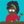

The bellwether has sounded

South Park
17h
@SouthPark
South Park: Joining the Panderverse is now streaming on Paramount+ in US & CA. Start your free 30-day trial with code: SOUTHPARK.
4,041
5,370
220
50,020


Worth “noting” that any attempts to weaponize @CommunityNotes to demonetize people will be immediately obvious, because all code and data is open source
1,575
2,264
211
26,679
Making a slight change to creator monetization:
Any posts that are corrected by @CommunityNotes become ineligible for revenue share.
The idea is to maximize the incentive for accuracy over sensationalism.
21,928
26,679
7,552
267,446


Demented, but, in many ways, eerily accurate
piped.video/watch?v=1lXyup…
936
873
208
6,898